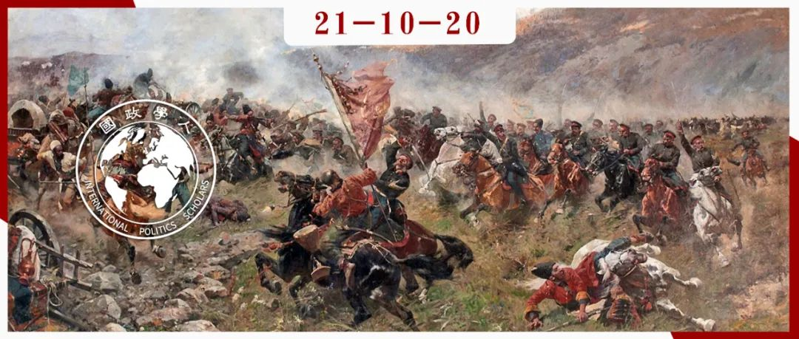

收录于合集 #《国际关系前沿》2021年第10期 2个

作品简介
作者 ： Kevin Blachford, 波罗的海国防学院讲师，专攻外交学，种族与政治研究。
编译： 江若婵（国政学人编译员，伦敦政治经济学院）
来源： Kevin Blachford (2020) “Western orientalism and the threat from Russia”, Comparative Strategy , 39(4), pp.354-367.
归档： 《国际关系前沿》2021年第10期，总第37期。

文章导读
关于战争的文化解释，以及将文化视作冲突的根源已经成为了国际关系研究中一个主要的方面。亨廷顿的《文明的冲突》甚至暗示文化差异将定义21世纪的战争与冲突。通过文化认同理解战争证明了群体如何将对手他者化 (othering)，以及战争如何在社会和政治关系中发挥构成性作用。战争本身也可以被理解为一种文化行为，其中社会的特征被“暴力地肯定了”。战争作为一种文化行为也可以在“我们”与“他们”之间创建一个明显的身份划分。一个明显的例子是美国及其欧洲盟友领导的西方战争被它们以与其他参与者截然不同的方式解读。自由民主国家经常将他们的战争描述为与非理性侵略者的冲突。而非西方的战争在其意图上被视为“具有犯罪性质”，在正当性上被视为非理性。
在通过文化镜头描绘战争时，战争往往成为“东方主义的有力场所”，其中“西方”是通过与“东方”的对立形象来定义的。这是一种夸大了文化差异的观点，并将其他文化视为异国情调、野蛮乃至于危险的。西方的战争是通过压倒性火力优势，外科手术式的精准打击以及依靠先进技术的迅速行动来理解的。而东方则被视为不理智的狂热者的发源地，采取狂热主义以及原始暴力。战争造成了塑造自我认同的存在主义危机，这一点可从俄罗斯与西方的紧张关系中看出来。正如本文所示，俄罗斯最近在格鲁吉亚、乌克兰和叙利亚的战争帮助塑造了关于西方和俄罗斯相互竞争的身份文化的论述。具体来说，俄罗斯经常被东方主义描述为一个拒绝西方价值观的东方强国。本文认为对俄罗斯的东方主义描述会限制我们对这些冲突的理解，并导致军事化加剧，因为俄罗斯的文化被视为与西方自由价值观不相容。对当代俄罗斯的文化解读仍然陷入陈词滥调和刻板印象中。关于普京“下棋”、“与毛熊对决”等刻板印象还在影响有关对俄紧张关系的西方论述。这种东方主义的观点值得深究，因为俄罗斯文化被广泛视为与西方发生冲突，关系紧张的主要原因。俄罗斯被指责“遵循永远的历史模式”，其行为很大程度上可以通过其历史、民族认同和广阔的国土来理解。
本文的目的并非为俄罗斯辩护。虽然俄罗斯毫无疑问在积极寻求破坏西方制度，然而有必要了解当前的紧张局势是如何受到文化分歧影响的。 西 方外交政策经常被描述为以人权，促进民主或自由秩序的名义行事；而俄罗斯的外交政策在很大程度上只能通过其战略和民族文化来理解。 本文认为将俄罗斯看作一个非西方的大国加强了分离的身份，也加剧了看似不相容的文化之间的冲突。
01
俄罗斯文化作为冲突和东方主义的根源
尽管东方主义最初是从殖民时代发展起来的，但东方主义说明了西方如何定义自己以及对其他人的看法。东方主义基于“想象的地理”，可用于了解西方如何描绘东方。西方对东方的描绘塑造了身份和文化，但“至关重要的是，它不是实际的、地理上的东方和西方，而这是有问题的”。这是对独特和对立文化的描绘。
俄罗斯与西方之间的地缘政治紧张局势通常从文化角度来理解。这超越了对不同国家利益的研究，已经成为一个自由民主的西方与不理性的东方之间的意识形态对立。当初，苏联被认为是一个不理性的敌人，更有可能使用核武器。美国文化以拥抱个人自由而闻名，而苏联则被理解为一个压迫性的帝国。冷战结束以后，国际关系中的自由派学者继续声称“最终只有一条现代化之路”。这种从进化的角度对政治的意识形态化理解认为西方以及自由国际秩序是现代化的最高形式。因此俄罗斯自己的利益以及对政治秩序的理解因为它的”落后“可以被忽视。冷战后的胜利情绪导致国际关系界的自由主义学者认为西方和欧洲正处于一个根本性的新时代。有些学者甚至声称欧洲通过创造“后克劳斯维茨政治文化“公开质疑武力的效用，从而迈进了一个新的历史时代。因此，俄罗斯动用武力捍卫国家利益的意愿引发了欧洲精英的怀疑。俄罗斯在乌克兰和克里米亚的行动震惊了欧洲的精英们，并引发了针对西方精英”忽视俄罗斯战略意图“的批评。
在西方试图理解乌克兰危机时，俄罗斯使用混合战争 (hybrid warfare)的行为被解释为起源于特殊的“意识形态愿景和政治野心”以及俄罗斯精英和社会的独特“世界观”。俄罗斯在乌克兰的行动也被归因于俄罗斯领导层“看世界”的方式。Lieven认为将俄罗斯的行为与纳粹德国相比较这一类比的过度使用暗示了俄罗斯领导层是“绝对的邪恶力量，深深汲取了俄罗斯文化中根深蒂固的恶意元素”。是且只是俄罗斯社会与精英的文化使得地缘政治重回欧洲。当西方观察者试图解释地缘政治竞争重回欧洲时，会有东方主义倾向将自己看作对激励措施理性反应的理性主义者；而俄罗斯的外交政策则受到了对现代性的抵制的影响，或者是源于一种能够追溯到民族性格和历史包袱的原始本能。
02
西方的东方主义与俄罗斯
在审视自2008年格鲁吉亚战争以来俄罗斯的外交政策行动时，许多西方的观察家得出了“俄罗斯人无视逻辑”的结论。 未能充分了解俄罗斯政治，以及未能加深对俄罗斯外交政策的了解，反映了西方话语的一个长期趋势，即是根据俄罗斯的地理与文化看待它，默认是沙皇时代和苏联时代的历史遗产直接导致了俄罗斯今天的行为。Graham甚至认为欧洲有一个可以追溯到200年前的，基于“文化价值观差距”的“俄罗斯问题”。为了解释俄罗斯在国际领域的行为，西方观察家着眼于俄罗斯悠久的历史和广阔的领土；但这种原始性解释是以决定性 (deterministic) 的方式使用的。由于俄罗斯的历史和地理，它被指控遵循着与西方反复冲突的历史 “模型”。历史类和地缘政治类的解释本身并非东方主义，但是将这些解释简化为决定性的方法才是东方主义的表现。
乌克兰的战争和克里米亚的吞并被解读为“对冷战后欧洲地区秩序的正面挑战”。俄罗斯使用武力的行为也被视为与普京领导层有着独特的联系。 乌克兰和格鲁吉亚危机被归咎于普京“独特的反应“和普京的”抉择“。 似乎很少有人试图探索俄罗斯领导层的运作方式，或者更详细地考虑俄罗斯选择干预的原因。相反，人们倾向于接受简单化的论点，指责普京”不受约束的古怪的冒险主义“。西方分析家们认为普京”出人意料的政策决定“，以及他的”鲁莽“”震惊了专家“。将一切完全归咎于普京的意图体现出了重要的一点，即普京被视为独一无二的责任人。作为唯一一个被提及的人物，普京被描绘为一个”空想家“和”赌徒“。他的行为不被视作一个领导人面对现实政治做出的理性抉择。
乌克兰危机因其使用混合战争而被媒体广泛报道。混合战争被描述为“东方与西方“之间的斗争。在这个描述中引人注目的是俄罗斯的混合战争被视为无所不能，这夸大了俄罗斯的实力。西方观察家长期以来妖魔化东方的战术为非理性的、欺骗性的和卑鄙的。在描述俄罗斯的行动时，分析人士重复这个模式，指责俄罗斯使用”阴暗策略“，”偷偷摸摸“，使用基于”欺诈“的战术。此外，俄罗斯还被指责为没有”遵守规定“。俄罗斯对于非对称的战争 (asymmetrical warfare)并未被解读为对物质条件限制或战略限制的理性反应，但被指责具有欺骗性。 是俄罗斯的”战略文化“被视为犯下了拒绝西方战争方式的错误。例如，俄罗斯被指控由于普京的”中央指导权“而更适合混合战争。这忽略了一个事实，即混合战争的概念起始于美国，西方对于欺诈、隐蔽战术或代理战士的使用基本上被忽视。桑顿进一步论证说，”一个贯穿始终的基本问题是自由民主国家对于在战略层面制作任何类似于宣传，或者可归类为心理战的东西有一种本能的厌恶。”因此，美国在冷战时期和反恐战争时期使用宣传和隐蔽战术的长久历史被否定且免于考虑了。因此，对于俄罗斯使用混合战争进行批判性分析的尝试未能充分带入西方自己对于隐蔽战的使用。
俄罗斯的行为无疑对西方构成了威胁，并且在加剧紧张局势方面是有影响的。但是，在适应东方主义的观点时，围绕着俄罗斯的西方叙述限制了我们对于这些冲突的理解。美国及其盟国在反恐战争中经常使用隐蔽战术，但是西式战争仍然被视作与俄罗斯的东方战争本质上不同。 正如卡弗利所说，俄罗斯有4000名士兵参加了叙利亚战争，而美国在入侵了阿富汗19年后仍然有1000名士兵在那里，然而这并未被视为“战争”，而被描述为一项北约支援任务。 关于这些定义的细微差别可以帮助展现我们的预设。然而，像这样的文化解释会有滑入“本质主义以及无历史神话 (essentialist and ahistorical myth)” 的风险。关于冲突的叙述也有可能导致冲突的再生产。
03
西方认同：欧洲，俄罗斯和东方主义
在诉诸武力以及挑战西方强国的过程中，俄罗斯在西方叙述以及西方政治秩序的本体论中制造了自我怀疑。欧盟作为民间力量的扩张很大程度上都被解读为缺乏地缘政治或安全意义。此种乐观主义总是假设俄罗斯民主最终会表现出对美国外交政策偏好的“默许“。正如诺伊曼所说，冷战后的时代对于俄罗斯“是西方思想的学徒”这一想法深信不疑。前美国驻莫斯科大使问道：“谁丢了俄罗斯？”这样的问题是在暗示俄罗斯本质上是一个没有吸取西方的现代化教训，迷失在西方现代化道路上的坏学生。
俄罗斯的发展并未遵循西方自由民主的道路，其动用武力的意愿引发了一股自我怀疑和对于西方叙述的质疑的狂潮。在没有美国领导的情况下，俄罗斯对于西方干预的阻挠被解读为“危机”的一部分。哈尔布兰兹认为俄罗斯与西方之间的分歧不仅是地缘政治影响的冲突，而是关于本质上截然不同的“治理、政治价值观甚至道德”。俄罗斯无法默认一个自我认同为自由民主秩序的政策，这一点被做了文明层面的解读，即俄罗斯文化拒绝了西方。 正如赛德所说，“这样的结果通常是两极分化，东方人更东方，西方人更西方。”俄罗斯同样在寻求塑造一个与美国及其北约伙伴的西方身份不同的另一个身份。
04
俄罗斯与欧亚主义
与北约和欧盟不断升级的紧张关系导致俄罗斯强调其异于欧洲的独立身份，即一个位于亚洲和欧洲之间独一无二的强国。2015年欧亚经济联盟 (EAEU) 的成立也有助于支撑俄罗斯在后苏联地区的影响力，并创建了一个区域组织来对抗欧盟的扩张。这些事态发展延续了将东西方根据文化差异和文明影响范围进行划分的趋势。
在俄罗斯国内，公民和人权问题有增无减，但这经常被轻视为西方干涉或者是西方文化帝国主义。作为普京主要的支持来源，东正教的兴起也有助于强化俄罗斯作为一个抵制或者替代西方现代性的国家的形象。这个向西方关于俄罗斯的替代身份的系统性宣传已经不仅仅是推动一份强大的民族认同。正如切班科娃所说，“俄罗斯运用了文明特殊性的思想来维护其领土和政治的完整性。”积极推动一个文明性意识形态有助于巩固俄罗斯有别于西方的概念。 欧洲对外关系委员会报道称，截至2015年初，一项民意调查显示，70%的俄罗斯人对欧洲持负面看法，只有20%的人仍对于欧洲持积极态度。
自由制度主义一直困惑于缺乏民主规范并有腐败问题的国家间区域一体化的兴起。尽管欧亚地区主义至今未能产生实质性的经济效益，它在巩固俄罗斯作为文化上独特的文明大国的自我形象方面发挥着重要的象征性作用。随着中国的崛起和全球经济力量向太平洋转移，俄罗斯的外交政策越来越倾向于东方。与西方的紧张关系也促使俄罗斯与中国领导层更紧密地结盟。均势理论 (balance of power)可能会期望俄罗斯与美国联合以遏制中国。但这一切并未发生。虽然仅凭文化差异不足以解释俄罗斯与北约之间的紧张关系，俄罗斯的本体安全已经与一种话术联系在一起，其中文化与文明的差异被反复强调。
拉夫罗夫认为，俄罗斯作为一个欧亚强国的地位可以追溯到它在金帐汗国统治下的历史，当时的俄罗斯人“低头但并没有崩溃”。 他进一步宣称，蒙古对俄罗斯的入侵促成了“一个新的俄罗斯精神”。 拉夫罗夫将这段俄罗斯历史与其当代“主张俄罗斯国家在欧亚大陆的独立角色”的重要性联系起来。 对俄罗斯来说，倡导一种独特的非西方身份是保护自己免受西方干预的一种方式。 但这些行为模式也有助于进一步加深北约与俄罗斯之间的安全与政治分歧。西方的本体不安全感因此建立在西方反对俄罗斯之上，反之亦然，从而再现“互相的不安全感”以及恢复“历史仇恨”，而非减轻它们。
05
结论
欧盟是建立在“欧洲”的身份或理想之上的，但欧盟与俄罗斯、土耳其和巴尔干地区的关系表明我们需要更深入得考虑该如何定义“欧洲”与“欧洲安全”。 尽管这些地区曾经渴望融入欧洲，它们现在却正在寻找一条不同的道路，因为它们并没有受到欧洲的欢迎。尽管波罗的海国家已经将自己与欧洲身份绑定，但是由于这些国家夹在欧盟与俄罗斯之间左右为难，比如说乌克兰、格鲁吉亚和白俄罗斯，它们正日益成为文化差异的战场。文明的势力范围划分加剧了东西方之间的鸿沟，并鼓励了文化认同的安全化，从而形成了一个“我们 vs 他们”的意象，限制了外交范围。西方与俄罗斯之间的二元区分也因忽视政治层面细微的相似性而造成了更深层次的分歧。 赛德的东方主义“提醒我们对待其他人的方式在很大程度上是对自己的反映”。 另外，将混合战争归类于全面战争还会假定政治的任何一个方面都会升级为全面战争。
译者评述
本文非常深入地探讨了西方许多观察者以文化理由来解释俄罗斯对外行为的现象，并条理清晰地指出了这一倾向的肤浅性以及危险性。 第一大亮眼之处是指出了以美国为首的西方世界经典的双重标准，即奉行自由民主政治制度的国家享有文明的特权，即使是战争也是理性抉择，而不属于这个政治俱乐部的国家对于战争就是易被煽动的狂热者，完全使用了两种不同的解释体系。 这套话术甚至可以忽略部分事实，例如宣称混合战争、宣传、隐蔽战法这些需要计谋，并不光明正大的做法只有“东方人“会使用。双重标准的本质上还是舆论霸权。
我们还可以看出， 东方主义虽然是殖民时代的产物，且殖民主义在二战之后就已经行将就木了，但是消失的只是现实生活中的殖民地，相关的殖民主义思想仍然停留在许多人的脑海中。 由此也可以看出国际关系后殖民主义学说的可靠性。关于某个国家的刻板印象就是殖民主义思维残留的例子。正如本文指出，西方舆论中提到俄罗斯，经常出场的就是一头凶恶的熊，透露出其野蛮好斗的特性，激起人民的防范心理。这已经是关于这个国家的最经典刻板印象了。东方主义理论中最危险的就是文化原罪论，这种对民族历史文化的偏见远远比冷战时期对对方意识形态的偏见严重得多。因为一个国家的意识形态是可以改变的，但是文化与历史几乎无法改动，从而造成一个无解之局，双方的对立只能无限上升，鸽派数量下降，外交谈判空间缩小。值得注意的是，作者并非替俄罗斯辩护，他承认了俄罗斯确实在试图削弱西方，正如西方也在试图削弱它一样，也没有认为文化论完全无效。他是在警告文化决定论的恶果。因为如果西方妖魔化俄罗斯上至沙皇统治下至当下的每个历史时期，无论何种政体，这会被俄罗斯人解读为对他们整个民族的攻击，从而激起民族主义，后果极其危险。
本文的一大贡献是指出西方这种过于决定论的分析来源于冷战胜利带来的影响。持续数十年的冷战的胜利使得西方世界冲昏了头脑，进入了一个现实主义者会斥为过于天真的时代。他们忘记了自己的胜利部分也来自地缘政治博弈，反而错误地认为从此地缘政治不再重要，从而和刚刚输掉冷战的俄罗斯形成价值观差距，而后者比任何时候都要重视地缘政治与国家利益。尽管欧盟自认是个非政治的、代表和平善意的联盟，扩大范围完全没问题，但落到刚刚经历解体而异常敏感的俄罗斯眼里则是完全相反的理解。此外，作为冷战的输家，俄罗斯也被骄傲的西方剥夺了话语权，后者轻视它对于自己国家利益的维护，反而期望它成为自己政治制度的学生。双方对于冷战后自我定位的巨大差异决定了接下来的对抗。 由于西方对于自己制度的过分自信，他们经常会问出“谁丢了俄罗斯？““谁丢了中国大陆？”之类的问题，预设就是所有国家都应该遵循它们的发展道路，如果没有做到就会心怀不满。 而这几乎可以解释大多数与西方有矛盾的国家真正对其不满的地方。
作者还指出，文化决定论的风靡是由于人们偏向于简化的观点，而这对现实生活种分析局势只有不利效果，因为现实问题比这复杂得多。 分析俄罗斯局势的时候一个大忌就是过度聚焦于普京个人的言行，仿佛整个俄罗斯的决策层只有这一个人。尽管普京的权威在国内无人能撼，但他远非一锤定音的绝对独裁者。忽略其他政治势力的存在，做不到深入研究俄罗斯政治运行的原理或是无法深层分析俄罗斯的东急都将导致理解不全面。
最后，本文的另一大亮点是指出这种文化决定论扇起的敌意是双向的，俄罗斯必会反击，然后西方更加警惕，从而形成一个恶性循环。 欧亚联盟的出现，东正教的兴起以及与中国的合作即为俄罗斯的反击。尽管其中有些更像是标志性而非实用性，但俄罗斯领导层推动一个与西方截然不同的文明认同的意图已经很明显。这种意图甚至使得均势理论无效。按照均势理论，既然如今中国在相对崛起而俄罗斯在相对衰落，那它应该与美国联手抗中，重演1970年代中美联手抗苏的桥段。这种说法并非没有道理，中国国内也有人担忧这种可能，但迄今为止我们在俄罗斯外交中并没有看到这种迹象，美国外交中也没有，甚至前几年总统特朗普还因为疑似通俄门遭到国会调查，可以看出所谓美俄合作仍然遥遥无期。而这不得不说部分是由文化决定论引起的。
词汇整理
辩护者 apologist
鬼鬼祟祟的 sneaky
隐秘的，秘密的 covert
原始的，远古的 primeval
人物漫画 caricature
理论家，空想家 ideologue
万能的，无所不能的 omnipotent
卑鄙的，阴险的 underhanded
不减弱地，不衰退地 unabated
金帐汗国 Golden Horde
**
**
责编｜ 吴天麟 何诗雨
排版｜黄紫蓝 游钜家
文章观点不代表本平台观点，本平台评译分享的文章均出于专业学习之用, 不以任何盈利为目的，内容主要呈现对原文的介绍，原文内容请通过各高校购买的数据库自行下载。

国政学人
支持学术公益与知识传播
微信扫一扫赞赏作者 __赞赏
已喜欢，对作者说句悄悄话
取消 __
发送给作者
发送
最多40字，当前共字
上一页 1/3 下一页
长按二维码向我转账
支持学术公益与知识传播
受苹果公司新规定影响，微信 iOS 版的赞赏功能被关闭，可通过二维码转账支持公众号。